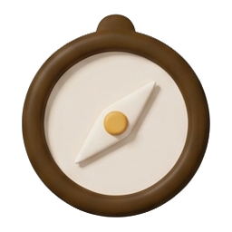
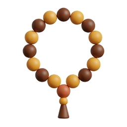
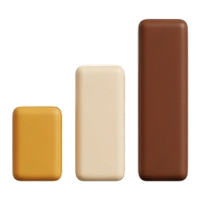

9:41
Mizan
18
36
Qolgan vaqt
Shom 0:53:30
29 sentabr
Toshkent
Uyg'otgich
Fokus

Qibla

Tasbeh

Statistika
Ehson
Namoz vaqtlari
Barchasi
Bomdod
05:36
Peshin
12:25
Asr
16:32
Shom
18:36
Xufton
20:02
Ertaga
Bomdod 05:34
Uyg'otgich yoqilgan
Bosh
Vaqtlar
Bog'
Ehson

 36
36